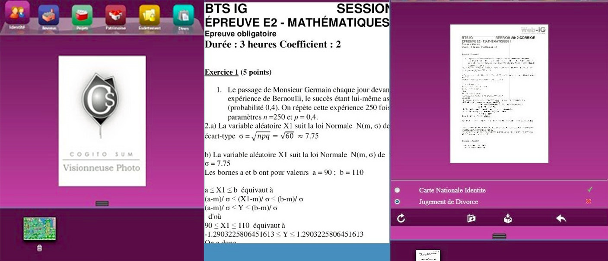

Visionneuse de documents en ligne
Description : Développement d'une application PHP de visualisation de documents (image ou pdf) en ligne. Contexte : Stage première et deuxième année de BTS SIO. Équipe : 3 personnes. Langages : PHP, HTML, SQL, Javascript, Jquery. Logiciels : EasyPHP, MySQL, Filezilla.
Le but de cette application est de pouvoir chargé des documents image ou pdf et ensuite de les afficher et de zoomer dessus.